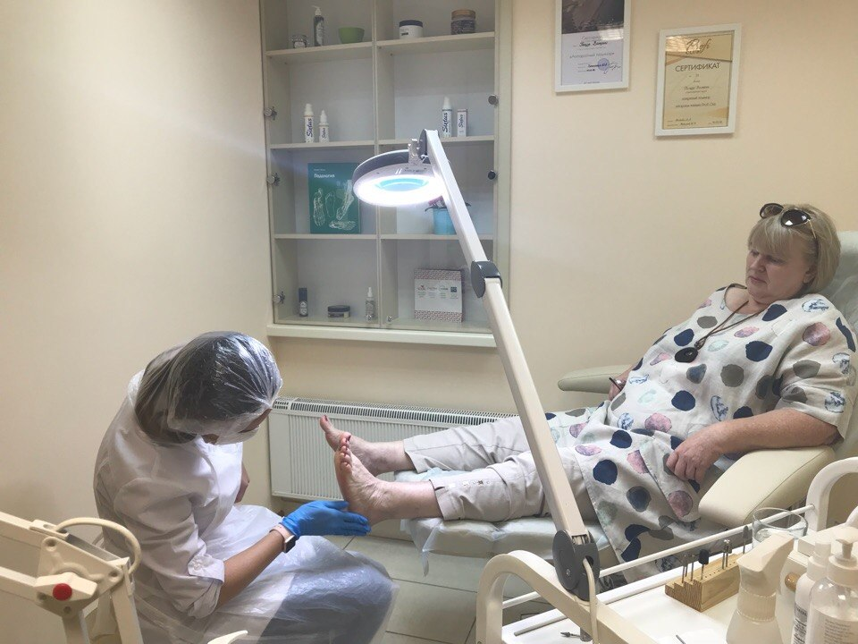
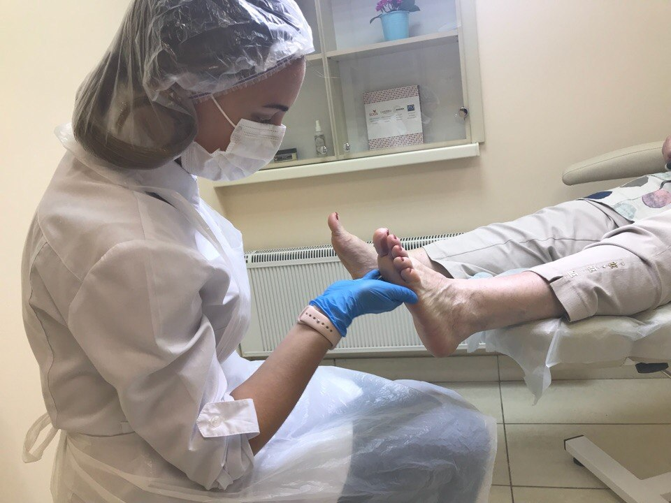
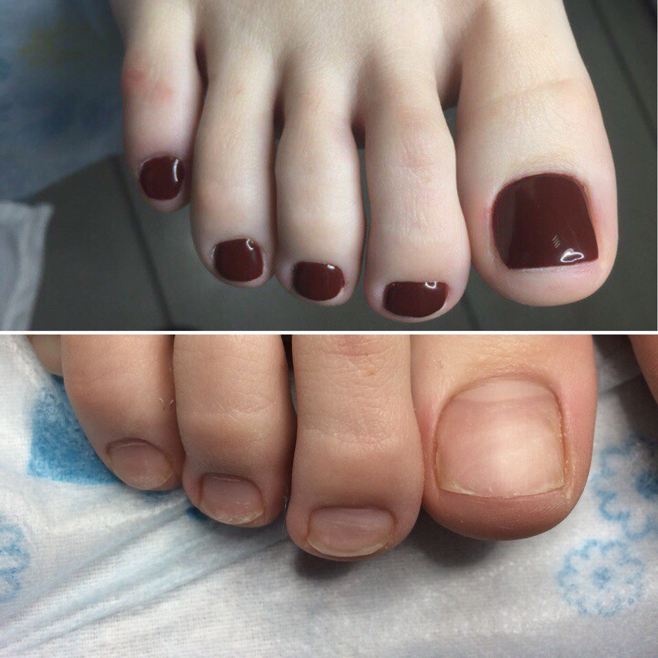
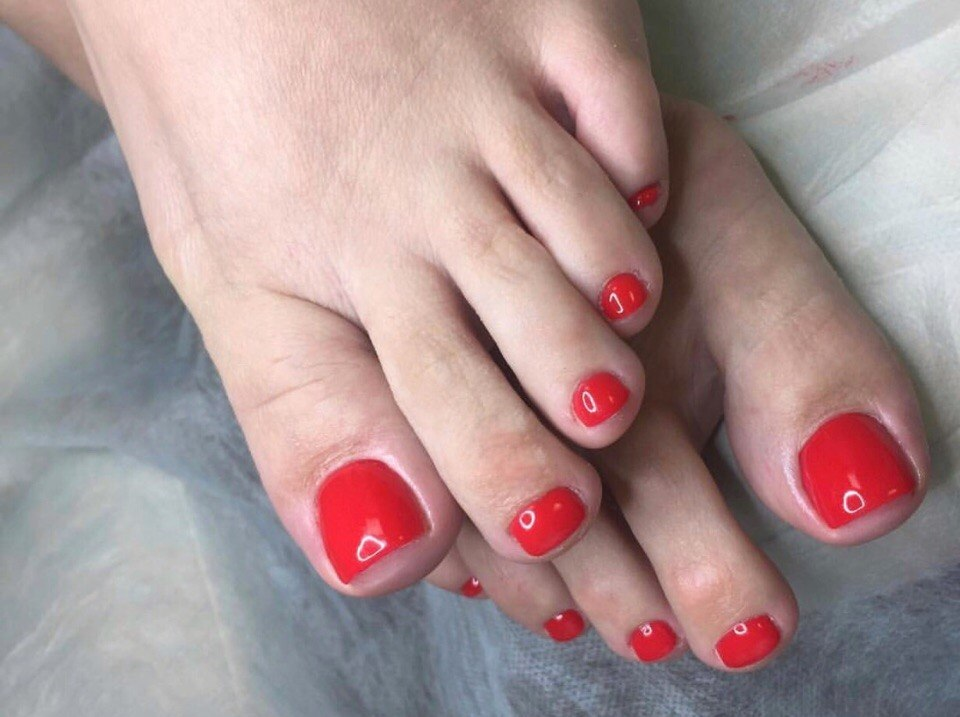
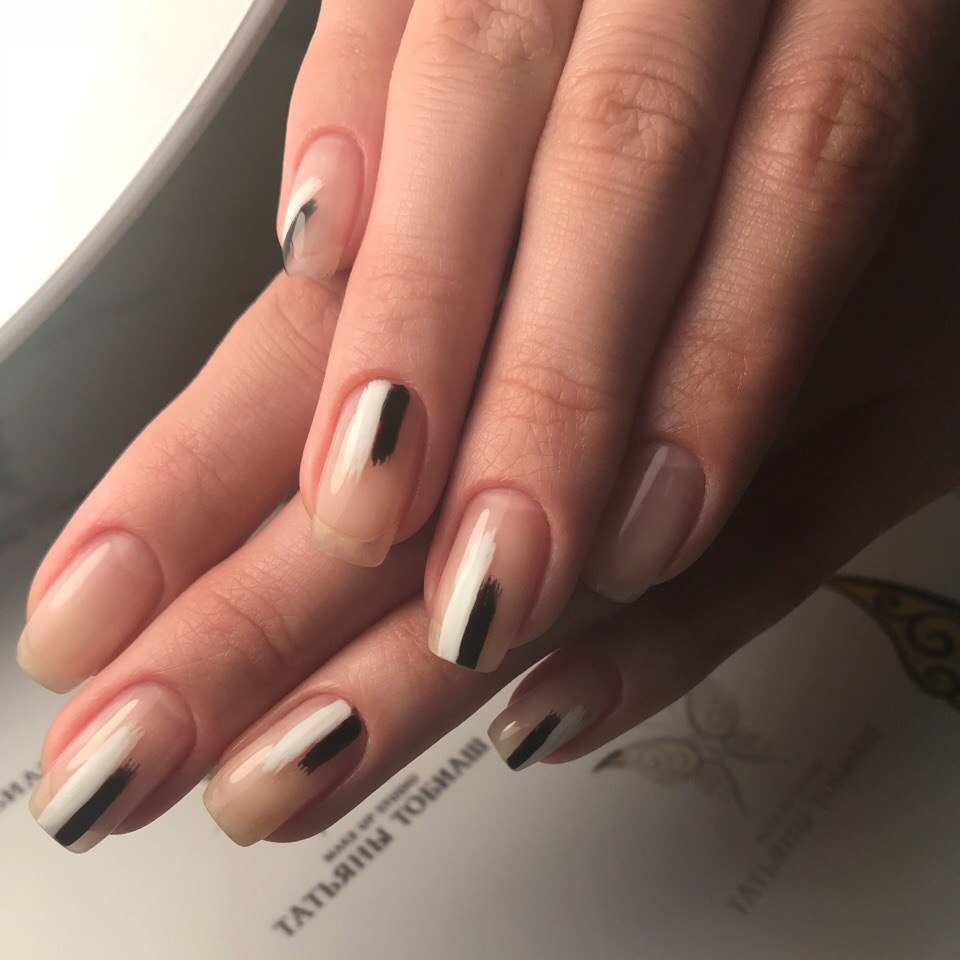
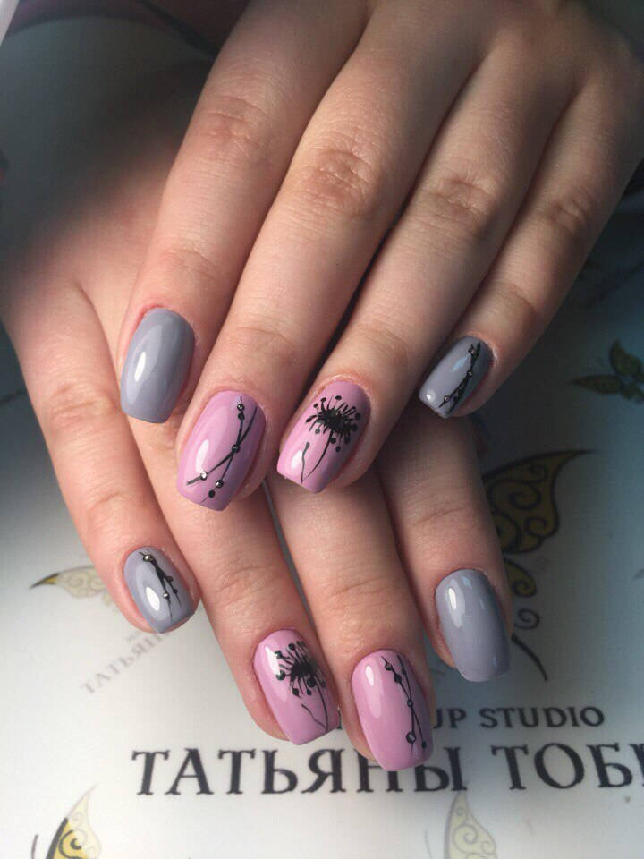

Медицинкий педикюр
Обычный (классический) гигиенический педикюр не всегда способен эффективно справляться со всеми проблемами ногтей и стоп.
Вросший ноготь, стержневая мозоль, гиперкератоз, трещины и множество других патологий требуют квалифицированного медицинского ухода
с помощью специального аппарата, который способен возвращать стопам и ногтям привлекательный внешний вид и здоровье эффективно и безопасно.
Аппаратный медицинский педикюр совмещает в себе бережный профессиональный уход за ногтями и стопами и возможность решения конкретных
медицинских проблем. Благодаря этой безболезненной процедуре вы сможете избавиться от целого ряда патологий и предотвратить их появление.
Аппаратный маникюр и педикюр




ЛЕЧЕНИЕ ноготков
В нашей студии появилась уникальная IBX система,которая поможет Вам вылечить и укрепить тонкий, слоящийся ноготок и окажет лечебное воздействие изнутри ,а если Вы надумаете снять гель-лак и немного отдохнуть, то с системой IBX у Вас получится восстановить Ваши ноготоки в течении месяца, разглаживает волны, сокращает время укладки и упрощает ее.
В нашей студии появилась уникальная IBX система,которая поможет Вам вылечить и укрепить тонкий, слоящийся ноготок и окажет лечебное воздействие изнутри ,а если Вы надумаете снять гель-лак и немного отдохнуть, то с системой IBX у Вас получится восстановить Ваши ноготоки в течении месяца, разглаживает волны, сокращает время укладки и упрощает ее.



